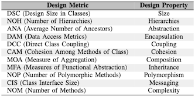
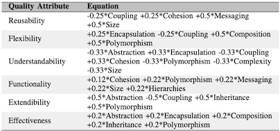

QMOOD was proposed by Bansiya and Davis [1] to measure software quality aspects in object oriented projects. This model defines 11 object-oriented design properties and links them to an appropriate design metric.
 Design Property" sizes=""/>
Then, it identifies six qualities attributes based on the ISO 9126 and propose equations using the design properties to measure such qualities.

Primarily QMOOD model was designed for evaluation with C++/Visual C++ validation suite though it can be applied on any object oriented language based software. The interpretation of the metric basis proposed [2] was used to apply the QMOOD to the Java. Similar to [2], z-score values of metrics were used.
[1] Jagdish Bansiya and Carl G. Davis, A hierarchical model for object-oriented design quality assessment. Software Engineering, IEEE Transactions on, 28(1):4–17, 2002.
[2] Mandeep K. Chawla, Dr. Indu Chhabra, Capturing OO Software Metrics to attain Quality Attributes – A case study. International Journal of Scientific & Engineering Research, Volume 4, Issue 6, June-2013.